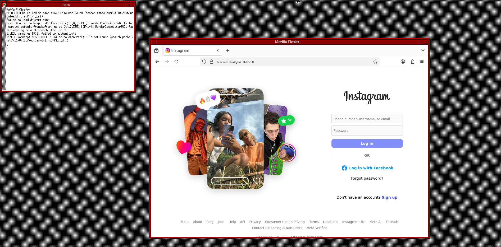

Microsoft Windows Family Windows 11 Windows 11 is full of random spyware and AI bloat. If you don’t care about the heavy system load, this is generally the best option for you, as everything will just work. Windows 10 Windows 10 has a special version called LTSC that is quite stripped down and light. Still, it has just lost official security support from Microsoft, which is a concern. Otherwise, it just works! Windows 2000 Now, for a 25 year old operating system you might not expect much, however it is quite useful. It has modern NVMe drivers, kernel extensions, etc. that allow you to run most programs you would need with no problem. The biggest con to this would basically just be the setup required.
Linux Linux is kind of a new breed if you’re coming from Windows. There are so many different distributions of Linux that target different audiences. It is very useful and brings lots of customization and freedom to the table. The biggest con to Linux is that it has a learning curve if you aren’t familiar. It does have an easy way to run your favorite windows programs on it, so no need to worry about that. OpenBSD If you like security, and security for your security, and then some more security, this is probably the operating system for you. This operating system purports to be the most secure - and they aren’t really wrong at all. You can’t even use bluetooth - it’s not secure enough. Otherwise, it’s fairly similar to Linux aside from having less programs available. Not for beginners, but definitely a fun try! FreeBSD Both this and the last one have BSD in the name, but don’t let that fool you, they are quite different. FreeBSD is a lot more user-friendly, has many more tools to run Linux and Windows programs, and overall is fairly easy to use. It’s still more difficult to use than Linux, though